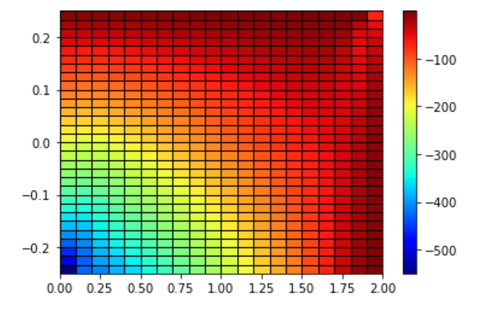
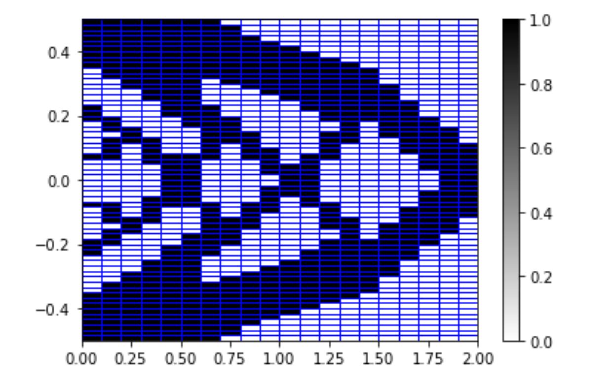

The wikipedia definition of topology optimization is "a mathematical method that optimizes material layout within a given design space, for a given set of loads, boundary conditions and constraints with the goal of maximizing the performance of the system".
Most of the techniques prevalent today use gradient information for optimization. But this is only possible if we know the compliance function which is not always the case. In these cases, we will have to use heuristic methods for the optimization. We used genetic algorithm to find the optimized structure for a 2D cantilever beam with load attached to the midpoint of its right side edge.
This approach also took care of various numerical instabilities like mesh dependency and one node hinges. Mesh dependency was taken care of using perimeter control which required information on number of holes and minimum area of holes. One node hinges were removed by penalising the offspring with a high positive value if they had a hinge so as to prevent selecting that offspring for crossover.
We also took advantage of the fact that in this case the loading point was symmetrical and thus restricted our design space to only the bottom half of the beam.


Boolean Satisfiability (SAT) is a very important problem in computer science. The aim of solving this problem is finding an assignment satisfying the boolean sentence. I aimed to solve the satisfiability problem for a 3 CNF sentence with 50 boolean variables using genetic algorithm. I varied the number of clauses in the sentence and checked the performance of the solver.
I checked the performance with different selection, crossover and mutation methods and found that tournament selection and uniform crossover work the best. I also found a region of unsatisfiability when the ratio of number of clauses to the number of variables was approximately 4.
For this project, we had to make a landslide susceptibility map of a region in Uttarakhand state in India. We created the map using a Naïve Bayes tree classifier which is a popular machine learning technique. We had to first find out the landslide conditioning factors of the area of interest i.e the most common factors which influence the landslide susceptibility of an area. We used aspect, curvature, depth, rainfall, road distance and slope as our landslide conditioning factors. Then we made the landslide inventory map using google earth which showed the past occurrences of landslides in the area.
The Landslide Susceptibility Map (LSM) was created using the ML plugins in Quantum Geo-Information System (QGIS).
Under Dr. Gaurav Dar
Small world networks find their applications in various social media studies, it has also been found that many groups of neurons in the brain are connected to each other through a small world network. In this project we studied the dynamics and robustness of a small world network.
First, we found the dynamics of a small world network without removing any synapses. The synchronization of the network was quantified using the cluster index parameter. The evolution of the network activity was simulated to verify the dynamics of a small world network.
Secondly, we removed synapses to study the robustness of a small world network. This was done by observing how the firing coherence changed upon the removal of synapses.
Connect-4 is a popular game, similar to tic-tac-toe, where a player has to match the pieces of the same color in a horizontal, vertical, or diagonal manner. In this project, some popular AI techniques were used to play the Connect-4 game. The efficacy of each method was also looked at.
Firstly, Monte Carlo Tree Search (MCTS), a popular tree-based algorithm was used to play the game. Two different MCTS algorithms:- MC200 and MC40 played against each other. MC200 would have 200 nodes in the game tree and MC40 would have 40 nodes. To further ensure that the algorithm picks a move that would ensure a draw in a losing position, I used rewards for different outcomes in the UCB selection instead of the popular idea of using number of wins for the node selection. After applying these new modifications, MC200 lost only 4% of games against MC40.
Secondly, I used a popular Reinforcement Learning technique, Q learning, to play against a range of MCTS algorithms. Q learning is a TD0 method, as a result, it updates the value of afterstates after each step in the episode. This update method helps Q learning to get a low variance and is generally preferred over other RL techniques like Constant Alpha Monte Carlo, which updates the values after the end of the episode. Since Q Learning stores the history of various episodes and how feasible a particular afterstate is, it should perform better than MCTS algorithms, since there is a degree of non-determinism in them.